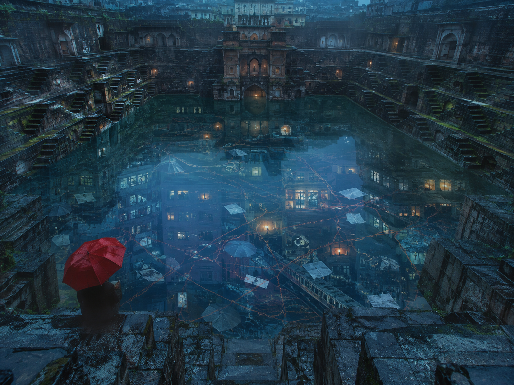
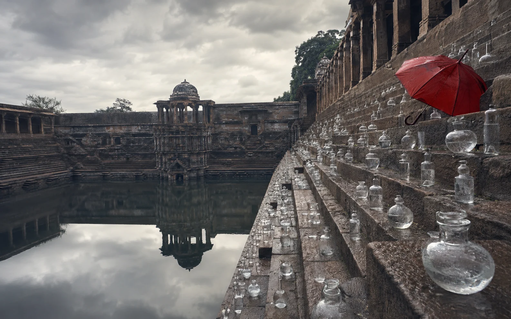
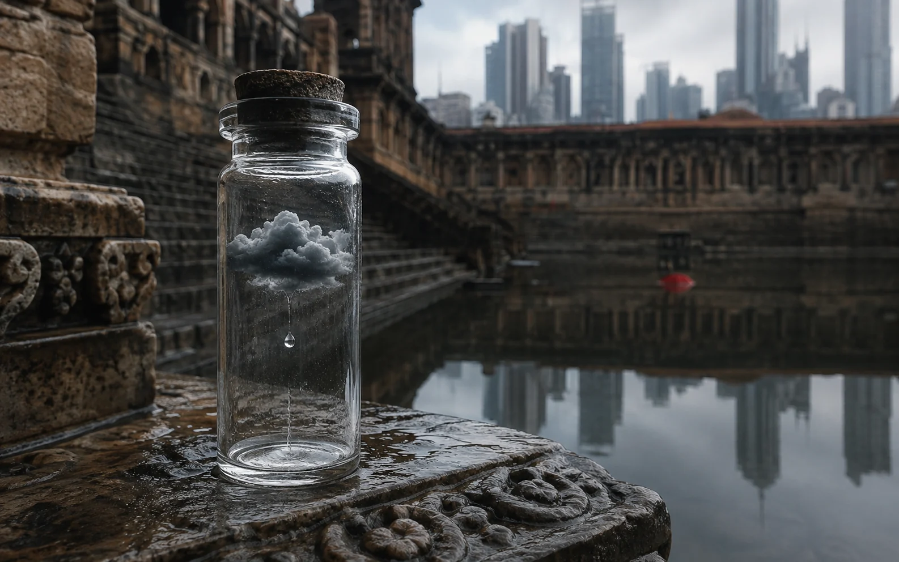

A speculative image series that asks: if a city could preserve every monsoon, what would its memory look like?

ROLEConcept + visual direction
FORMATThree-image visual study
METHODGenAI exploration + art direction
STATUSSelf-initiated experiment
THE QUESTION
Can an impossible image still feel remembered?
I began with two forms of memory: the deep geometry of an Indian stepwell and the fleeting atmosphere of monsoon rain. The visual system brings them together as an archive—water becomes something catalogued, stored and revisited.
My direction focused on physical credibility. Wet stone, reflected skies and restrained colour make the surreal elements feel discovered rather than digitally added.

01 / WORLD BUILDING
Turn weather into a collection.
The vessels create a repeatable visual device: every bottle can hold a different rain, year or memory. I kept them transparent and irregular so the installation belongs to the stone architecture instead of overpowering it.
ScaleThe wide frame establishes the archive as a place, not a single object.
Red umbrellaOne warm accent gives the viewer an entry point and links the series.

02 / HERO DETAIL
Give the idea one impossible proof.
The close frame makes the metaphor tangible: a storm cloud suspended inside a hand-sized vial. The distant skyline connects inherited architecture to contemporary urban memory without explaining the concept too literally.
Why a close-up?It changes the rhythm of the series and reveals the archive’s imagined function.
Why minimal colour?The restrained palette makes the tiny cloud and red accent feel more convincing.
WHAT I LEARNED
GenAI gets more interesting when the concept has rules.
Instead of prompting isolated beautiful images, I defined a world: stepwell geometry, monsoon atmosphere, glass vessels, one red marker and a believable camera language. Those constraints made the outputs more consistent—and turned experimentation into a small visual system.